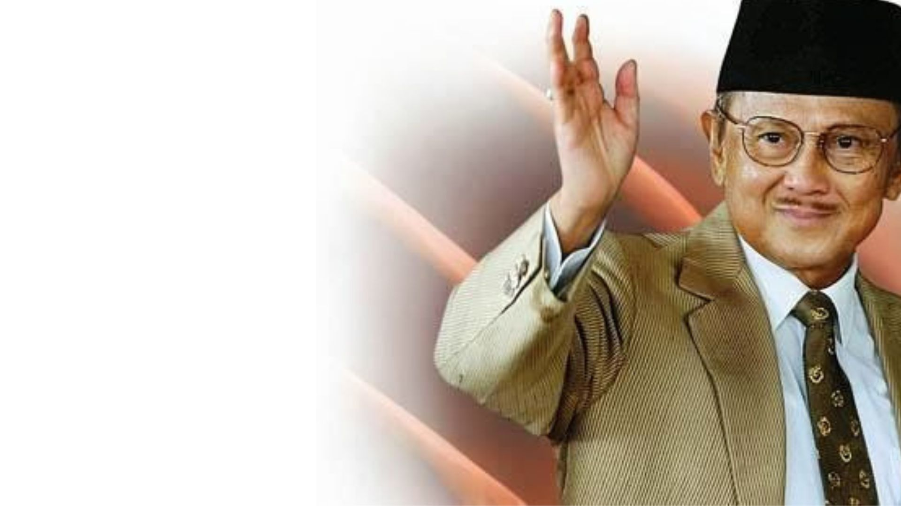

BJ Habibie dilantik sebagai Presiden pada 21 Mei 1998 setelah Soeharto mundur akibat tekanan masyarakat yang menginginkan reformasi di tengah krisis ekonomi 1997–1998. Krisis ini menyebabkan ekonomi Indonesia jatuh dengan sangat drastis, mengakibatkan inflasi, pengangguran, dan kerusuhan sosial. Habibie, yang sebelumnya menjabat Wakil Presiden, dihadapkan pada tugas berat untuk memulihkan stabilitas dan melakukan reformasi.
